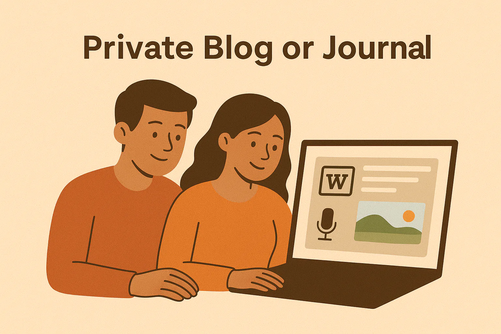

부모와 아이
엄마를 위한 선물: 자꾸 다시 읽게 되는 디지털 편지 쓰는 법
엄마를 위한 선물 중에는 한 번 열어보고 끝나는 것도 있습니다. 하지만 진심이 담긴 편지는 오래도록 마음속에서 다시 펼쳐집니다. 디지털 저널, 예약 발송되는 깜짝 메시지, 손글씨의 다정한 분위기에서 영감을 받아, 이 글은 엄마에게 친밀하고 오래 기억되며 정말 개인적으로 느껴지는 2luv 선물을 만드는 방법을 소개합니다.

엄마를 위한 선물 중에는 한 번 열어보고 끝나는 것도 있습니다. 하지만 진심이 담긴 편지는 오래도록 마음속에서 다시 펼쳐집니다. 디지털 저널, 예약 발송되는 깜짝 메시지, 손글씨의 다정한 분위기에서 영감을 받아, 이 글은 엄마에게 친밀하고 오래 기억되며 정말 개인적으로 느껴지는 2luv 선물을 만드는 방법을 소개합니다.
이런 순간, 다들 한 번쯤 있죠. 엄마에게 뭔가 제대로 된 걸 드리고 싶은데 꽃은 시들고, 머그컵은 이미 많고, 흔한 선물로는 내가 정말 하고 싶은 말이 전해지지 않는다는 느낌. 사실 많은 사람이 찾는 건 물건 하나가 아니라 엄마에게 이렇게 말할 방법입니다. “엄마가 나를 위해 감당해 온 걸 알아. 엄마가 내게 준 걸 기억해. 이제는 철이 좀 든 마음으로, 고맙고 사랑한다고 말하고 싶어.” 그래서 사려 깊게 만든 2luv Eomma Seonmul이 유독 힘이 있습니다. 감정을 한순간 스쳐 지나가게 두지 않고, 엄마가 위로가 필요할 때도, 뿌듯함이 밀려올 때도, 나와 가까워지고 싶을 때도 다시 꺼내 볼 수 있는 형태로 남겨주니까요.
맞춤 디지털 선물
사진, 메시지, 음악, 그리고 사랑하는 사람에게 바로 공유할 수 있는 링크가 담긴 페이지를 만들어보세요.
이 글에 담긴 이미지들도 같은 사실을 가리킵니다. 비공개 디지털 저널은 기억을 의도적으로 남기는 마음을 보여주고, 예약된 깜짝 이메일은 사랑이 한 번에 끝나지 않고 시간을 두고 이어질 수 있음을 말해줍니다. 손편지 이미지는 또 분명하게 알려주죠. 아무리 디지털 시대라도, 사람 마음에 가장 정확히 닿는 건 결국 말이라는 걸요. 그리고 이 분위기는 무엇보다 엄마를 위한 선물과 잘 어울립니다.
전체적인 분위기는 따뜻하고, 부드럽고, 조용히 되새기게 만듭니다. 번쩍이는 축하의 기운은 없습니다. 대신 글을 쓰고, 저장하고, 보내고, 다시 떠올리는 흐름이 있죠. 저는 이 점이 꽤 중요하다고 생각합니다. 엄마와의 관계는 대개 극적인 사건 하나보다 집에 데리러 와 준 날들, 챙겨준 도시락, 밤늦게 들어준 이야기, 아무도 크게 알아주지 않았던 희생 같은 반복된 돌봄 위에 쌓이니까요. 디지털 편지나 추억 저널은 그 구조를 그대로 닮아 있습니다. 엄마의 사랑이 수많은 순간으로 이루어졌다면, 이 선물도 수많은 순간을 존중해야 맞습니다.
그래서 엄마에게 보내는 메시지는 디지털 형식일 때 의외로 더 강하게 다가오기도 합니다. 2luv 편지에는 사진도 넣을 수 있고, 음성 메모도 담을 수 있고, 글로 적은 추억도 남길 수 있습니다. 심지어 며칠 뒤 아침에 도착하도록 메시지를 예약해 둘 수도 있죠. 감정 한 번 세게 전하고 끝내는 방식이 아니라, 하나의 경험을 만드는 겁니다. 가족의 기억을 붙들고 있는 사람이 엄마인 경우가 많다는 걸 생각하면, 이런 선물은 단순한 콘텐츠가 아니라 간직할 기록에 가깝습니다.
관계에 관한 연구는 꾸준히 같은 쪽을 가리킵니다. 내가 보였고, 인정받았고, 고맙게 여겨졌다고 느낄 때 관계는 단단해집니다. 가까운 관계를 연구한 John Gottman은 연결을 바라는 신호에 응답하고, 애정과 존중을 표현하는 일이 중요하다고 말해 왔습니다. 이 연구는 주로 부부 관계로 알려져 있지만, 가족에게도 놀랄 만큼 잘 들어맞습니다. 사랑은 거창한 표현보다 일상적인 언어와 반복되는 인정 속에서 더 깊어집니다.
사랑은 우리가 주고받는 물건이 아니다. 사랑은 함께 보살피고 키워 가는 것이며, 두 사람 안에 이미 그 마음이 있을 때에만 자라날 수 있는 연결이다.
Brené Brown, 『The Gifts of Imperfection』
많은 성인 자녀에게 어려운 건 엄마를 사랑하는 일이 아닙니다. 그 사랑을 어른다운 말, 구체적인 말, 진심으로 들리는 말로 옮기는 일이 더 어렵죠. “다 고마워” 같은 문장은 따뜻하지만, 오래 남는 메시지가 되기엔 결이 조금 부족할 때가 많습니다. 사람 마음을 움직이는 건 결국 디테일입니다. 어떤 기억이었는지, 어떤 희생이었는지, 엄마가 늘 하던 말이 무엇이었는지 적는 순간, 그 돌봄이 정말 나를 만들었다는 사실이 믿을 만한 문장으로 바뀝니다.
잘 사랑하는 일은 연애 관계에만 해당하는 과제가 아니다. 의미 있는 모든 관계에서 필요한 일이다.
bell hooks, 『All About Love』
고전문학도 다른 방식으로 같은 얘기를 합니다. 의미 있는 사랑은 종종 편지로 남습니다. 편지가 오래된 방식이라서가 아니라, 글을 쓰면 사람이 조금 느려지고 그제야 진실한 말을 하게 되기 때문입니다. 좋은 엄마 메시지에 완벽한 문장은 필요 없습니다. 필요한 건 감정의 선명함입니다. 엄마가 무엇을 했는지, 그게 내게 어떤 의미였는지, 그래서 지금의 내가 무엇을 품고 살아가는지.
엄마를 위한 디지털 선물을 만든다면, 긴 연설문 한 편을 쓰려 하기보다 층을 쌓는다고 생각해 보세요. 먼저 감사로 시작합니다. 그다음 선명한 기억 한두 개를 넣고, 엄마에게서 물려받았거나 배운 성품을 적습니다. 마지막에는 안심이 되는 문장으로 끝내세요. 엄마가 당신이 보고 싶을 때, 괜히 걱정이 될 때, 혹은 그냥 사랑받는 기분이 필요할 때 다시 읽을 수 있는 문장이면 좋습니다.
이미지들이 암시하는 형식 아이디어도 꽤 좋습니다. 메모 하나만 보내지 말고, 엄마를 위한 2luv 경험을 만들어 보세요. 메인 편지 하나에 더해 예약된 깜짝 메시지를 붙이는 겁니다. 첫 메시지에는 본문이 되는 긴 편지를 보내고, 그다음 며칠 동안은 “엄마에게서 내가 또 배운 한 가지는…” 혹은 “절대 잊고 싶지 않은 엄마와의 기억 하나는…” 같은 짧은 문장을 도착하게 할 수 있죠. 감사가 한 번에 소모되지 않고 천천히 펼쳐지는 선물이 됩니다.
모든 사람이 엄마와 똑같은 관계를 맺고 살지는 않습니다. 좋은 선물은 그 차이를 존중해야 하고요. 어떤 사람은 가까움을 마음껏 축하하고 싶고, 어떤 사람은 오랫동안 말하지 못했던 고마움을 이제야 전하고 싶습니다. 또 어떤 사람은 조금 멀어졌던 관계를 조심스럽게 다시 시작하고 싶어 하죠. 진심 어린 메시지는 관계가 완벽한 척할 필요가 없습니다. 솔직하고, 다정하면 충분합니다.
사랑은 믿음의 행위이며, 믿음이 적은 사람은 사랑도 적다.
Erich Fromm, 『The Art of Loving』
2luv로 엄마 선물을 준비하는 분들을 위한 진심 메시지 예시입니다.
강한 디지털 선물은 말만으로 끝나지 않습니다. 감정을 뒷받침하는 증거가 함께 있을 때 훨씬 깊어지죠. 어릴 적 사진 한 장을 넣어보세요. 직접 얼굴 보고는 쑥스러워서 못 했던 말을 짧은 음성 메모로 남겨도 좋습니다. “엄마를 존경하는 이유”, “엄마에게 배운 것”, “엄마 덕분에 보호받는다고 느꼈던 순간” 같은 제목으로 비공개 추억 저널을 만들어도 좋고요. 그리고 하루나 이틀 뒤 도착할 깜짝 메시지 한두 개를 예약해 두세요. 이 형식은 이미지들이 보여주는 정서와 잘 맞습니다. 기억이 있고, 메시지가 있고, 타이밍이 있습니다.
예를 들면 이런 식입니다. 어버이날 전날 밤, 거실 불이 거의 꺼진 시간에 사진 세 장을 고릅니다. 초등학교 운동회 사진, 수능 끝나고 같이 먹었던 국수 사진, 최근에 같이 찍은 평범한 셀카. 그리고 2luv에 메인 편지를 올린 뒤, 이틀 뒤 오전 8시 10분에 짧은 메시지 하나를 예약해 둡니다. “엄마가 늘 내 도시락에 과일 하나 더 넣어주던 거, 나 사실 아직도 기억해.” 이런 문장은 거창하지 않아도 이상하게 오래 남습니다. 오히려 그런 디테일이 진짜예요.
많은 엄마들은 오랜 시간 꼭 필요한 사람이었지만, 충분히 목격되지는 못한 채 살아갑니다. 그래서 진심 메시지 하나가 유난히 깊게 들어갈 때가 있습니다. 그건 단순히 “사랑해”라고 말하는 데서 끝나지 않거든요. “내가 봤어. 기억하고 있어. 이제는 예전보다 더 이해해.”라고 말해 주니까요. 감정의 언어로 보면, 이건 분명 선물입니다.
엄마를 위한 선물을 고르고 있다면, 오래 남는 쪽으로 가보세요. 디지털 편지 한 통, 비공개 추억 저널, 혹은 시간을 두고 열어볼 수 있는 깜짝 메시지의 연속도 좋습니다. 2luv에서는 단순히 무언가를 보내는 게 아닙니다. 엄마가 다시 당신과 가까워지고 싶을 때마다 꺼내 볼 수 있도록 감사를 남겨두는 일이죠.
이 이야기와 이어지는 2luv의 이벤트, 카테고리, 태그 페이지도 함께 살펴보세요.
이 글이 마음에 남았다면, 비슷한 주제와 상황, 메시지 아이디어를 다룬 카테고리와 태그도 계속 둘러보세요.